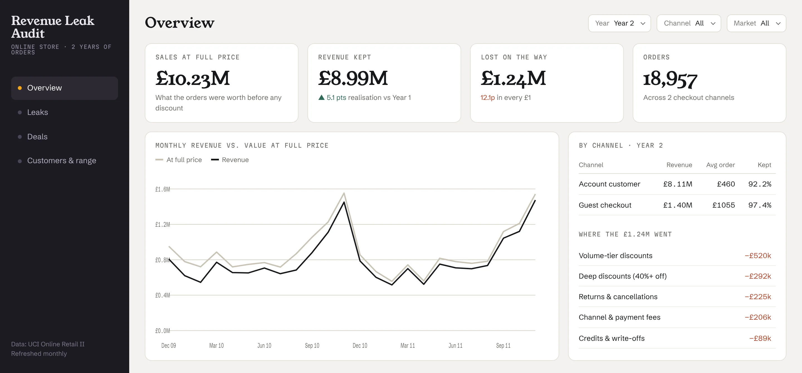
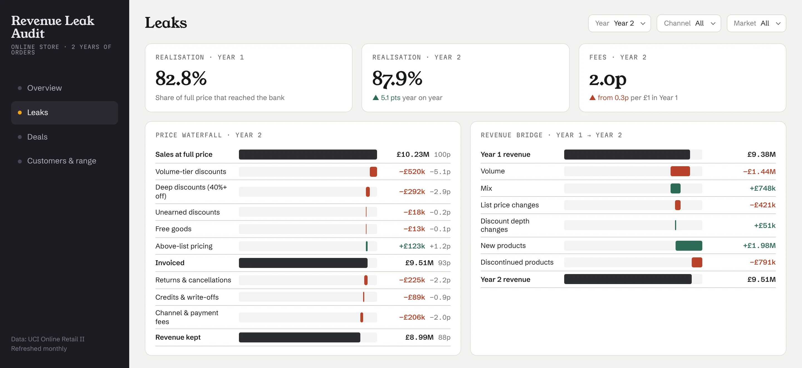
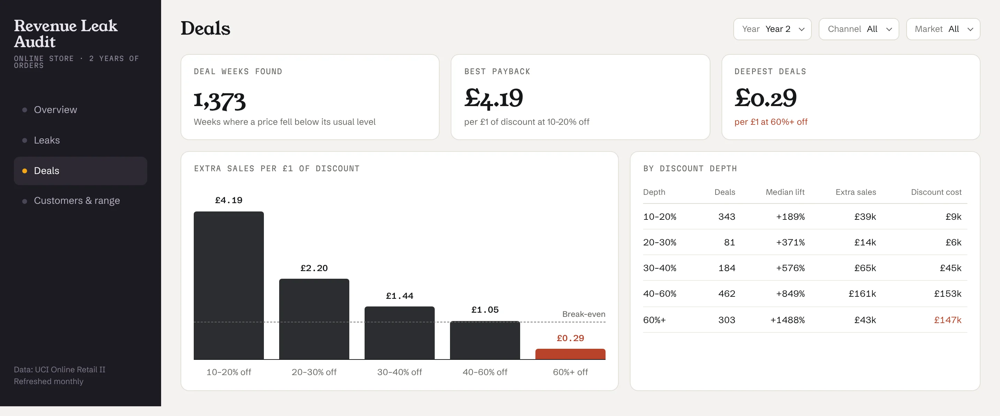
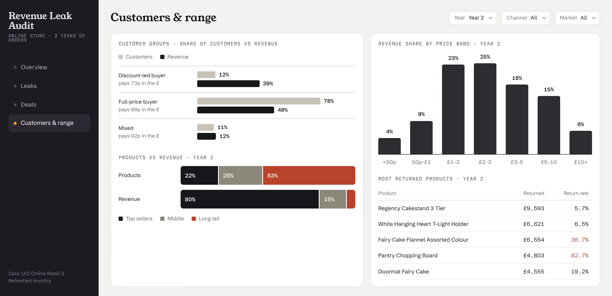

Personal projectPricing case study
Revenue Leak Audit
What an online store’s own order data says about its prices, deals and range.

Most pricing work starts with retailer data that smaller brands never see. This project asks a simpler question: what can a brand that sells online learn from the one dataset it always has, its own order export? Using two years of public orders from a UK online store, it traces where money leaks between the full price and the revenue that actually reaches the bank.
- Data
- UCI Online Retail II, a public dataset
- Scale
- About 1 million order lines over two years
- Analyses
- Price waterfall, revenue bridge, deal payback, customer segments, range
- Built with
- Python, Looker Studio, AI-assisted analysis
Five findings
Year 2 unless notedThe dashboard
3 viewsThe same numbers, laid out as a dashboard a brand team could open every month and filter by year and channel.



How it was built
04 steps- 01
Clean
About a million order lines sorted into sales, returns, cancellations, free items and fees.
- 02
Set the full price
A full price for every product, channel and quarter, so each discount could be measured against it.
- 03
Analyse
Five standard pricing views: waterfall, revenue bridge, deal payback, customer segments and range.
- 04
Present
A Looker Studio dashboard and a short, plain-language read-out of what to do next.
AIAI assistants wrote first drafts of the cleaning and analysis code and the chart layouts. The judgement calls, like what counts as full price and which leaks matter, were mine, and every figure was checked against the data.
Read with care
- The store sells gifts and homeware, and many of its customers are small shops buying in bulk. Some patterns would differ for a consumer brand.
- The data has no promotion calendar. “Deals” are weeks where a product’s price dropped below its usual level, so deal payback is an observed pattern, not a tested result.
- Figures are in pounds sterling, as recorded in the source data.
Source: Online Retail II, UCI Machine Learning Repository (CC BY 4.0).